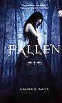

Fallen
ComprarDescrição
Epílogo – Coleção Fallen Um fim eterno para um amor imortal. Depois de tantos séculos marcados por maldições, guerras celestiais e encontros dolorosos, Lucinda e Daniel finalmente encontram a paz: uma vida juntos, livres, como humanos. Neste encerramento emocionante da série Fallen, os destinos se entrelaçam em perdão, esperança e recomeços. Enquanto os anjos buscam redenção e antigos amores encontram seus próprios caminhos, Luce e Daniel vivem o que sempre desejaram: um amor simples, mas eterno. Perfeito para fãs da saga e leitores apaixonados por finais que aquecem o coração.
- Autor(a): Lauren Kate
- Número de páginas: 401